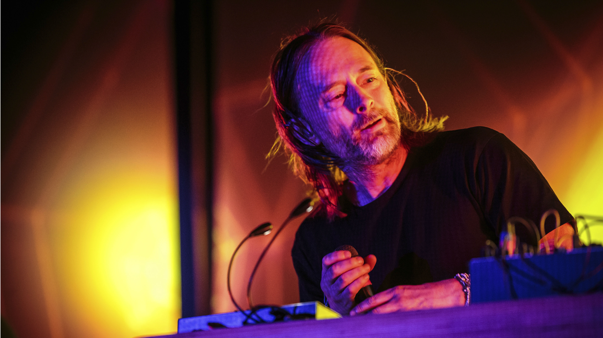

Who is Thom York
Thomas Edward Yorke (born 7 October 1968) is an English musician and the main vocalist and songwriter of the rock band Radiohead. A multi-instrumentalist, he mainly plays guitar and keyboards and is known for his falsetto. He has been described by Rolling Stone as one of the most influential singers of his generation. Yorke formed Radiohead with schoolmates at Abingdon School in Oxfordshire. After he graduated from the University of Exeter, Radiohead signed to Parlophone; their early hit "Creep" made Yorke a celebrity, and Radiohead have gone on to achieve critical acclaim and sales of over 30 million albums. Yorke's early influences included alternative rock acts such as the Pixies and R.E.M.; Radiohead's fourth album, Kid A (2000), saw Yorke and the band move into electronic music, influenced by Warp acts such as Aphex Twin.
Streaming Performance at Sonos Radio
Solo Albums
- Anima — 27 July 2019
- Tomorrow's Modern Boxes — 26 September 2014
- The Eraser — 10 July 2006
Collaborations
Yorke has collaborated with artists including PJ Harvey, Björk, Flying Lotus and Modeselektor, and has composed for film and theatre; his first feature film soundtrack, Suspiria, was released in October 2018. With artist Stanley Donwood, Yorke creates artwork for Radiohead albums and his other projects. Feel free to navigate through the links below.
- Pink Floyd song "Wish You Were Here" with Sparklehorse.
- "El President" with Isabel Monteiro of Drugstore.
- Unkle track "Rabbit in Your Headlights", a collaboration with DJ Shadow.
- R.E.M., to perform their song "E-Bow the Letter".
- Three tracks on the PJ Harvey album Stories from the City, Stories from the Sea.
- Duetted with Björk on her Oscar-nominated song "I've Seen It All".